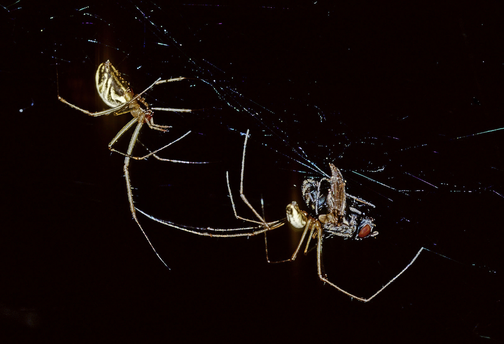

The Sierra Dome spider (Neriene litigiosa) is a North American sheet-weaving spider in the family Linyphiidae known for its unusually complex mating system, including female-controlled sperm use, elaborate male-male competition, and extended mate guarding under female control.

Male Sierra Dome spider (Neriene litigiosa) stealing a prey item from a female. Visiting kleptoparasitic males capture about 80% of prey on female webs except during copulatory courtship, when feeding success shifts strongly toward the female. Copulatory courtship therefore both reduces male kleptoparasitism and provides females with information about multiple aspects of male genetic quality and condition.
This species has served as a long-term model system in evolutionary behavioral ecology through more than four decades of continuous field and laboratory research conducted by Dr. Paul J. Watson. Its accessible web structure, dramatic courtship behaviors, and strong individual variation make it uniquely well suited for studying sexual selection, development, and behavioral integration.
Why the Sierra Dome Spider Matters
One of the most detailed long-term field and laboratory studies of a single spider species
Clear example of multi-modal female mate selection and cryptic female choice of multiple sires
Extensive evidence bearing on polyandry and mate selection strategies
Studies documenting the real-time energetics of multi-modal courtship and male-male fighting behaviors
Integration of behavior, physiology, and individual differences in physical and behavioral development
Studies of the role of disease in mating system evolution
Research on this system is ongoing and new behavioral and molecular biological investigators are needed to keep the work going!
Research Program
Dr. Paul J. Watson has been studying the sexual selection system of the Sierra Dome spider in northwestern Montana at Flathead Lake Biological Station since 1980. For a fuller overview of the long-term research program, see:
Watson, P. J. (1986). Female pheromone transmission thwarted by males in Linyphia litigiosa. Science, 233, 219–221.
Watson, P. J. (1990). Female-enhanced male competition determines the first mate and principal sire in the spider Linyphia litigiosa (Linyphiidae). Behavioral Ecology and Sociobiology, 26, 77–90.
Watson, P. J. (1991). Multiple paternity and first-mate sperm precedence in Linyphia litigiosa (Linyphiidae). Animal Behaviour, 41, 135–148.
Watson, P. J. (1991). Multiple paternity as genetic bet-hedging in female Sierra Dome spiders. Animal Behaviour, 41, 343–360.
Watson, P. J. (1993). Foraging advantage of polyandry for female Sierra Dome spiders (Linyphia litigiosa). American Naturalist, 141, 440–465.
Watson, P. J., & Lighton, J. R. B. (1994). Sexual selection and the energetics of copulatory courtship in the spider Linyphia litigiosa. Animal Behaviour, 48, 615–626.
Watson, P. J. (1995). Dancing in the dome. Natural History, 104, 40–43.
Watson, P. J. (1998). Multi-male mating and female choice increase offspring growth in the spider Neriene litigiosa. Animal Behaviour, 55, 387–403.
deCarvalho, T. N., Watson, P. J., & Field, S. (2004). Costs increase as ritualized fighting progresses in the Sierra Dome spider, Neriene litigiosa. Animal Behaviour, 68, 473–482.
Keil, P. L., & Watson, P. J. (2010). Assessment of self, opponent, and resource during male-male contests in the Sierra Dome spider, Neriene litigiosa. Animal Behaviour, 80, 809–820.